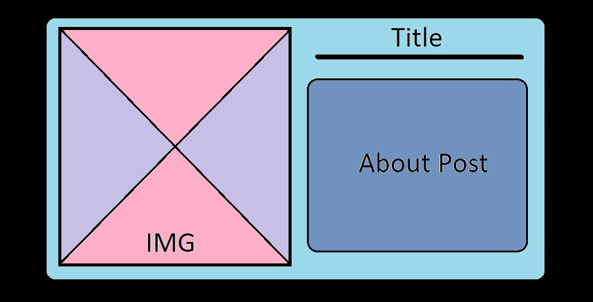

vis.co - Website Design
The main goal I had with this site was to approach form a visual perspective. I really wanted to incorporate colour and use it to section different parts of the website while maintaining a very simplistic style and easy navigation. I also wanted to move forward from my last sememster website and try to also emphasis the responsiveness of the site. I spent a goo dmajority of time prior to the start of the sememter watching a lot of tutorials on how to utilise CSS for this, while also sticking mainly to the idea of simplicity.
As a result, there were many aspects of the site that did not come to frutation, mostly because of skill and time, but until exam submission, I believe that all can still be achieved, even if it is not yet.
The first part of the site I worked on was the navigation. In my previous site, I was unable to use JS at all, and tried to see if I could use it for animations in my nav bar, that could potentially be used throughout the site. Although I did manage to get it to work on my homepage - in which it scrolls along the bar as you move from section to section, I struggled with the interference of the JS on other pages of the site, and as a result, I decided to use CSS to mimic the effect of the hover present on the homepage nav, using the nav as a wholesite menu of sorts, in which it would take to to the base of the section, which is on the homepage, and then allow you to navigate from there using links/buttons/cards. I really wanted a cohesivity between the nav and the sections, and the use of this colour coding on a black background, with a black to colour gradient for each sectioon helped me achieve that.
The next part was the sections. As I developed the site, I realised I could narrow down my sections to a minimal with focus on the visualisations (technical), theory and then - after recieving feeback about my character, I realsing I could be using the about for my character basis and website development discussions - which is what you are now seeing/reading...
With regards to the character - I definitely did not have a clear idea of one prior to the last feedback, but now I believe I have come to create a very anonymous character. Almost informat like. Currently I am still developing this character, as the inpiration came quite late towards the end of this assignment. I am aspiring to create a percievable character that is knowledgeable and adequate in data display and colour use. I want the site to be a reflection of the character's interests - so not to directly display them, but rather use the site as a outlet of knoweldge and experimentation.'I do feel it is very vague, but I think I could potentially get this across with more additions to my About, where I could discuss more about the making of the visuals and extra detailing behind the site. Potentially, I see cards being made for this section as well by exam submission (hopefully).
Above was the one item I really had visualised - that I wanted to potentially create and use, and then have it responsonsively change to portrait format if necessary. However given time and circumstance I ended up opting for the portrait one throughout. I have tried multiple time to change the card layout to this and have it change responsively, but unfortunately it constantly presents problems in responsivity that I don't know how to fix yet. I would like to implement this card design to create some variation in the site. I would like to use these landscape cards for the visualisations, and the portrait ones for posts. I believe it wil help with the monotony of the site and further the creative aspect. Currently I have left it out but will continue to try am implement it by the exam.
I honestly did not make explicit wireframes for my site. I knew what kind of focus I wanted on the different elements and parts of the site, and then experiemented with different layouts and sizings till I felt it emcompassed the aspects I wanted. A lot of the site was a result of trial and error - seeing what worked and what didn't. In the case of the blog post layout, I really wanted the simplest layout that would give focus to the content. In my previous site I also opted for this but it relayed quite badly as a wall of text that was very hard to read. i did some research into fonts which I then ended up applying to the entire site, and using a black block on colour background style to add layering an give a more refined feel to the site. I wanted to implement this effect in my About section on the homapage but it hasn't been working out very well and relays quite dully - so for the meantime I have decided to leave it quite bare in plain text. I still want to address the lack of cohesiveness between the button and the text - both in colour and style.
With regards to the actual content and my theory work. I have been made aware that I have been quite harsh on myself, and moving forward I would like to make the changes I proposed by my final submission. I did really enjoy these topics and would definitely like to further on them - however, I do want to for this Assignment 2, focus on improving my technical to a passing mark first, and so I emphasised my efforts there - although fairly I do not think this partucular aspect is in my strengths.
Next was my responsivity. I worked between my own mobile device (iPhone) and the site - using the inspect on screen when coding mostly to address other devices. I often found issues when addressing android and given feedback form the previous assignment, I think this was still ill addressed. For this submission I focused more on fixing my technical and did not address this part at all - moving forward, I definitely want to. Especially given that I myself wanted this part of the site to be a major focus. I am not sure how yet but I want to apply the responsivity to my graphs as well but I am struggling.
In terms of the technical...
I was initially unaware that we were using D3 (due to personal circumstances I was behind in technical) and used Chart.js - so I spent most of my time trying to learn D3 and implement it but I struggled. A lot. I removed my inital visualisation and decided to make two new ones using D3. I don't have too much to say right now, but in terms of my goals, I still want to try and keep the colur theme of black and yellow/off-yellow-green for my data - or somehow tie in the theme of the section ot the visuals by my exam.
Overall there is not a lot of improvement in anything other than the technical (and it is barely there).
Update:
I have decided to not split the post, and just update it.
With the feedback received from the last submission, I have decided to move on and focus on my stronger point - theory. I have struggled a lot with D3 and have detailed that in each graph post. I also decided that moving forward with the visualisations a a whole, I will attempt to but at least something out, despite the difficulties. I - for the most part - am struggling to filfil the interactive and cohesive nature of the graphs that make up the creative aspect, but I feel that, at this point, getting something at all out from that end is quite an achievemnt for myself.
The next point is the responsivity of the site. Unfortunately, with the graphs, I am struggling to ruther my site responsivity, and have noticed some bugs appearing through the updates I make to the site and I think it may be the JS for my swoosh that I havent removed from most of the pages, with the exam submission, I intend to remove this and aviod that, but in the case of the graph responsivity, I am still unsure of how to approach this issue.
Final Update:
This semester has been quite a ride. I was able to clearly improve my skills in D3 within the last month, as well as my comprehensivity of JS. My strengths clearly lied in my use of CSS and combined HTML, but again, I am very proud of my progress with the coding aspects of the course, especially the more technical nature of JS. Throughout the design and maintainance of this site, I realised that I really have a very big vision for tasks and projects I wish to accomplish, and that sometimes my skills do not match this vision, but with the current state of progress, I could easily see myself furthering in a profession of this nature.
With the site, I am very happy with the fina outcome, espeically consdiering the means of education and the external curcumstances I fond myself in. BEing able to grasp skills that I was very inept at last semesetr was very fulfilling, and seeing my work appreciated, made me feel even more so. ALthoug i wasn't able to fully realise the extent of my site as I had intented, I am satisfied with the esults and am porud to present the site vis.co as it stands now.